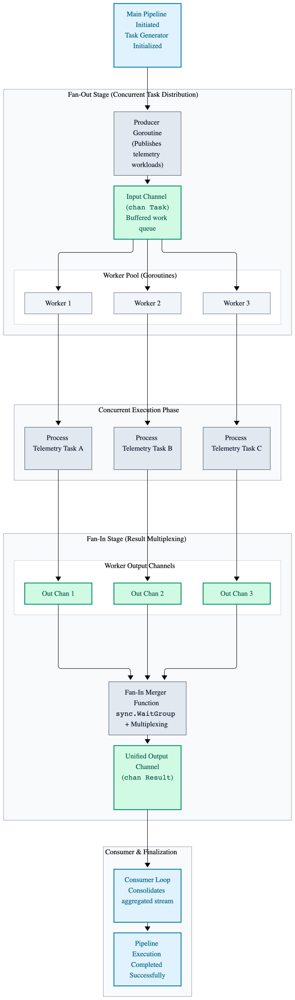
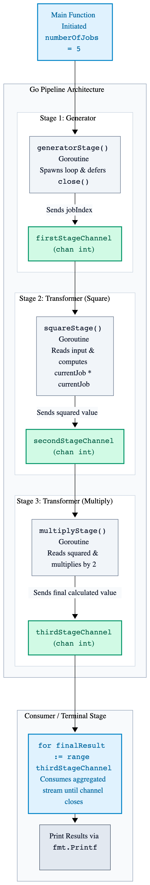
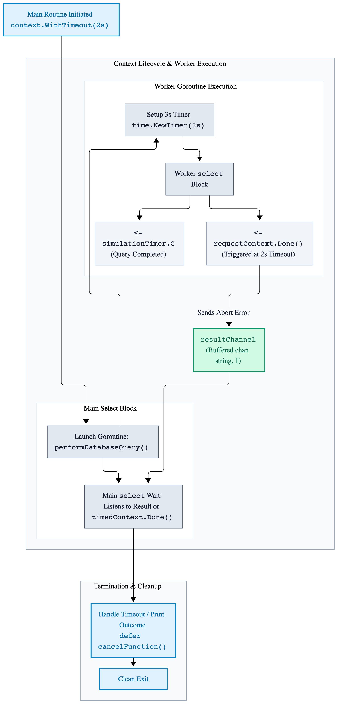
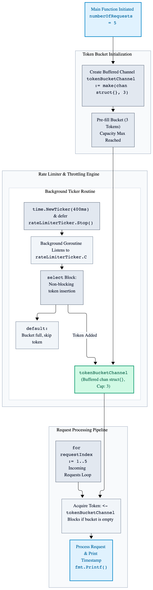

Advanced Concurrency Patterns
Welcome to Chapter 5 of the Go Systems Blueprint. Building upon the Go M:N Scheduler (GMP model) and core primitives examined in Chapter 4, advanced concurrency patterns allow you to build robust, scalable, and high-performance concurrent applications.
This chapter covers essential architectural patterns, defensive implementation strategies, and best practices for avoiding common pitfalls like goroutine leaks, unbuffered channel deadlocks, and race conditions.
5.1 Worker Pool Pattern
When dealing with massive task volumes (such as thousands of incoming HTTP requests or file processing jobs), spawning a new goroutine for every single task can overwhelm the scheduler and exhaust system memory. A Worker Pool bounds concurrent resource usage by distributing tasks across a fixed set of persistent worker goroutines.
package main
import (
"errors"
"fmt"
"sync"
"time"
)
// ProcessJobs consumes jobs from the input channel, computes results, and sends them to the output channel.
func ProcessJobs(workerId int, jobs <-chan int, results chan<- int, waitGroup *sync.WaitGroup) error {
// Defensively validate that the worker identifier is a positive non-zero value.
if workerId <= 0 {
return errors.New("error: worker identifier must be greater than zero")
}
// Defensively check if the input job channel is nil to prevent runtime blocking panics.
if jobs == nil {
return errors.New("error: job input channel cannot be nil")
}
// Defensively check if the output result channel is nil.
if results == nil {
return errors.New("error: result output channel cannot be nil")
}
// Defensively check if the wait group reference is nil.
if waitGroup == nil {
return errors.New("error: task wait group reference cannot be nil")
}
// Ensure the wait group counter is decremented automatically when this worker exits.
defer waitGroup.Done()
// Continuously read incoming jobs from the channel until it is closed.
for jobValue := range jobs {
// Log the beginning of the job execution cycle for the specific worker.
fmt.Printf("Worker %d started job %d.\n", workerId, jobValue)
// Simulate heavy computational work using a fixed time delay.
time.Sleep(time.Millisecond * 500)
// Send the computed double value back through the output results channel.
results <- jobValue * 2
// Log the successful completion of the current job cycle.
fmt.Printf("Worker %d finished job %d.\n", workerId, jobValue)
}
return nil
}
func main() {
// Define constants governing the total scale of jobs and concurrent workers.
const jobCount = 5
const workerCount = 3
// Initialize buffered channels for safe message passing between goroutines.
jobs := make(chan int, jobCount)
results := make(chan int, jobCount)
// Declare a wait waitGroup synchronization primitive to track active workers.
var waitGroup sync.WaitGroup
// Start worker goroutines in a loop based on the defined worker count.
for workerId := 1; workerId <= workerCount; workerId++ {
// Increment the wait group counter before launching each worker goroutine.
waitGroup.Add(1)
// Launch an anonymous background goroutine for the worker process.
go func(currentWorkerId int) {
// Execute the worker process function and capture any returned errors.
err := ProcessJobs(currentWorkerId, jobs, results, &waitGroup)
// Safely handle and print any unexpected execution errors from the worker.
if err != nil {
fmt.Printf("Worker process error: %v\n", err)
}
}(workerId)
}
// Populate the input job channel with a series of sequential task identifiers.
for jobIndex := 1; jobIndex <= jobCount; jobIndex++ {
jobs <- jobIndex
}
// Close the job input channel to signal workers that no more jobs will be sent.
close(jobs)
// Block main execution until all spawned worker goroutines have completed their tasks.
waitGroup.Wait()
// Close the result output channel once all worker execution threads have terminated.
close(results)
// Iterate over the results channel to collect and print all processed output values.
for value := range results {
fmt.Printf("Result: %d\n", value)
}
}Figure 5.1: Worker Pool Concurrency Architecture

5.2 Fan-Out / Fan-In Pattern
- Fan Out: Multiple goroutines read concurrently from a shared input channel. Go's channel mechanics naturally handle load distribution: whichever worker becomes available first grabs the next available unit of work from the queue. This prevents bottlenecks and maximizes throughput.
- Fan In: Multiple discrete output channels produced by individual workers are merged into a single consolidated channel. This allows a downstream consumer to range over a single unified stream without needing to manage multiple channels manually.
package main
import (
"errors"
"fmt"
"sync"
"time"
)
// GenerateJobs creates the initial stream of raw data (Fan-Out source).
func GenerateJobs(jobCount int) (<-chan int, error) {
// Defensively validate that the job count is a positive non-zero value.
if jobCount <= 0 {
return nil, errors.New("error: total job count must be greater than zero")
}
// Initialize a buffered output channel to store the generated raw jobs.
jobsOut := make(chan int, jobCount)
// Spawn a background goroutine to produce and send job numbers.
go func() {
// Ensure the output channel is closed when job generation completes.
defer close(jobsOut)
// Iterate through the total count and push each job index into the channel.
for jobIndex := 1; jobIndex <= jobCount; jobIndex++ {
jobsOut <- jobIndex
}
}()
return jobsOut, nil
}
// ProcessStream processes items from the input channel (Fan-Out workers).
func ProcessStream(workerId int, stream <-chan int) (<-chan int, error) {
// Defensively check that the worker identifier is a positive non-zero value.
if workerId <= 0 {
return nil, errors.New("error: worker identifier must be greater than zero")
}
// Defensively check if the input stream channel is nil.
if stream == nil {
return nil, errors.New("error: input stream channel cannot be nil")
}
// Initialize an unbuffered channel for the worker's processing results.
resultsOut := make(chan int)
// Spawn a background worker goroutine to process incoming items from the stream.
go func() {
// Ensure the results output channel is closed when the worker exits.
defer close(resultsOut)
// Continuously read job values from the input stream channel.
for jobValue := range stream {
// Log the ongoing execution state for the current worker and job.
fmt.Printf("Worker %d processing job %d.\n", workerId, jobValue)
// Simulate processing time using a fixed millisecond delay.
time.Sleep(time.Millisecond * 400)
// Perform the transformation step and send the multiplied value to the results channel.
resultsOut <- jobValue * 2
}
}()
return resultsOut, nil
}
// MergeStreams multiplexes multiple worker channels into a single unified channel (Fan-In).
func MergeStreams(workerChannels ...<-chan int) (<-chan int, error) {
// Defensively verify that at least one worker channel was provided for merging.
if len(workerChannels) == 0 {
return nil, errors.New("error: at least one worker channel must be provided")
}
// Declare a wait group to track active worker consumption routines.
var waitGroup sync.WaitGroup
// Initialize a unified output channel to consolidate all results.
mergedOut := make(chan int)
// Define an internal helper function to consume from a single worker channel.
consume := func(channel <-chan int) {
// Ensure the wait group counter decrements when the consumer finishes.
defer waitGroup.Done()
// Read all values from the specific worker channel and forward them to the merged channel.
for value := range channel {
mergedOut <- value
}
}
// Add the total number of worker channels to the wait group counter.
waitGroup.Add(len(workerChannels))
// Iterate over each worker channel and launch a dedicated consumer goroutine.
for _, channel := range workerChannels {
if channel != nil {
go consume(channel)
}
}
// Spawn a background goroutine to wait for all consumers to finish before closing the merged channel.
go func() {
waitGroup.Wait()
close(mergedOut)
}()
return mergedOut, nil
}
func main() {
// Define constants governing the overall pipeline scale.
const jobCount = 6
const workerCount = 3
// 1. Setup Producer Stage: Generate the raw input job stream.
jobs, err := GenerateJobs(jobCount)
// Defensively check for any error during job stream generation.
if err != nil {
fmt.Printf("Job generation error: %v\n", err)
return
}
// 2. Fan-Out: Spawn multiple worker goroutines reading from the same input stream.
var workerChannels []<-chan int
// Loop to instantiate each worker and attach it to the job stream.
for workerId := 1; workerId <= workerCount; workerId++ {
workerResults, workerErr := ProcessStream(workerId, jobs)
// Defensively handle errors during individual worker stream creation.
if workerErr != nil {
fmt.Printf("Worker stream creation error: %v\n", workerErr)
continue
}
// Append the worker's result channel into the registry slice.
workerChannels = append(workerChannels, workerResults)
}
// 3. Fan-In: Merge all worker output channels into a single unified stream.
results, mergeErr := MergeStreams(workerChannels...)
// Defensively check for errors during stream merging.
if mergeErr != nil {
fmt.Printf("Stream merge error: %v\n", mergeErr)
return
}
// 4. Consume the unified stream: Print all processed results as they arrive.
for result := range results {
fmt.Printf("Received Result: %d\n", result)
}
}5.3 Pipeline Pattern
A pipeline is a series of stages connected by channels, where each stage is a group of goroutines running the same function. Data flows downstream through each transformation step.
package main
import (
"errors"
"fmt"
"time"
)
// GenerateSensorReadings produces the initial stream of raw millivolt sensor data.
func GenerateSensorReadings(readingCount int) (<-chan int, error) {
// Defensively validate that the reading count is a positive non-zero value.
if readingCount <= 0 {
return nil, errors.New("error: reading count must be greater than zero")
}
// Initialize a channel for raw millivolt values.
millivoltChannel := make(chan int)
// Spawn a background goroutine to simulate hardware sensor output generation.
go func() {
defer close(millivoltChannel)
for readingIndex := 1; readingIndex <= readingCount; readingIndex++ {
// Simulate varying raw sensor millivolt output values.
millivoltChannel <- readingIndex * 150
}
}()
return millivoltChannel, nil
}
// CalibrateReadings adjusts raw millivolt readings to account for hardware baseline drift.
func CalibrateReadings(millivoltChannel <-chan int) (<-chan int, error) {
// Defensively check if the input millivolt channel is nil.
if millivoltChannel == nil {
return nil, errors.New("error: millivolt input channel cannot be nil")
}
// Initialize a channel for calibrated sensor values.
calibratedChannel := make(chan int)
// Spawn a background goroutine to process and calibrate incoming readings.
go func() {
defer close(calibratedChannel)
for rawValue := range millivoltChannel {
// Apply a calibration correction offset to the raw reading.
calibratedChannel <- rawValue - 25
}
}()
return calibratedChannel, nil
}
// FormatReadings transforms calibrated values into human-readable telemetry status reports.
func FormatReadings(calibratedChannel <-chan int) (<-chan string, error) {
// Defensively check if the input calibrated channel is nil.
if calibratedChannel == nil {
return nil, errors.New("error: calibrated input channel cannot be nil")
}
// Initialize a channel for formatted string reports.
reportChannel := make(chan string)
// Spawn a background goroutine to format data packets.
go func() {
defer close(reportChannel)
for calibratedValue := range calibratedChannel {
// Format the final telemetry message string with clear unit labels.
reportChannel <- fmt.Sprintf("Sensor Status [Calibrated Output: %d mV]", calibratedValue)
}
}()
return reportChannel, nil
}
func main() {
const totalReadings = 5
// Stage 1: Generate the raw millivolt data stream from the hardware sensor.
rawMillivoltStream, generationError := GenerateSensorReadings(totalReadings)
if generationError != nil {
fmt.Printf("Sensor generation error: %v\n", generationError)
return
}
// Stage 2: Calibrate the raw readings to remove hardware baseline error.
calibratedStream, calibrationError := CalibrateReadings(rawMillivoltStream)
if calibrationError != nil {
fmt.Printf("Calibration error: %v\n", calibrationError)
return
}
// Stage 3: Format the calibrated values into descriptive telemetry reports.
reportStream, formattingError := FormatReadings(calibratedStream)
if formattingError != nil {
fmt.Printf("Formatting error: %v\n", formattingError)
return
}
// Consume and print the final telemetry reports from the pipeline terminal.
for telemetryReport := range reportStream {
fmt.Println(telemetryReport)
// Simulate minor processing pace.
time.Sleep(100 * time.Millisecond)
}
}Figure 5.3: Multi-Stage Data Pipeline Architecture

5.4 Context Cancellation & Timeout Propagation
Using the context package is vital for controlling execution lifecycles.
It ensures that when a parent operation is canceled, times out, or fails, all child goroutines
are instantly notified to abort their work and free up resources.
package main
import (
"context"
"errors"
"fmt"
"time"
)
// QueryDatabase simulates a database lookup that respects context cancellation.
func QueryDatabase(queryContext context.Context, queryDelay time.Duration, resultChannel chan<- string) error {
// Defensively check if the query context is nil to prevent runtime panics.
if queryContext == nil {
return errors.New("error: query context cannot be nil")
}
// Defensively check if the query delay is valid.
if queryDelay <= 0 {
return errors.New("error: query delay must be greater than zero")
}
// Defensively check if the result channel is nil.
if resultChannel == nil {
return errors.New("error: result channel cannot be nil")
}
// Initialize a timer to simulate query execution latency.
queryTimer := time.NewTimer(queryDelay)
defer queryTimer.Stop()
// Multiplex between context cancellation and query completion.
select {
case <-queryContext.Done():
// Send cancellation details to the channel and return the context error.
resultChannel <- fmt.Sprintf("Query aborted: %v", queryContext.Err())
return queryContext.Err()
case <-queryTimer.C:
// Send success notification to the channel.
resultChannel <- "Query completed successfully."
return nil
}
}
func main() {
// Define a strict SLA timeout limit for the database operation.
const slaTimeout = time.Second * 2
// Create a background root context.
rootContext := context.Background()
// Derive a timeout context enforcing the SLA limit.
timeoutContext, cancelFunction := context.WithTimeout(rootContext, slaTimeout)
defer cancelFunction()
// Instantiate a buffered result channel to capture worker output safely.
resultChannel := make(chan string, 1)
// Define a simulated query duration that intentionally exceeds the SLA timeout.
const queryDuration = time.Second * 3
// Launch the database query operation in a background goroutine.
go func() {
err := QueryDatabase(timeoutContext, queryDuration, resultChannel)
// Handle unexpected errors that are not normal timeouts or cancellations.
if err != nil && !errors.Is(err, context.DeadlineExceeded) && !errors.Is(err, context.Canceled) {
fmt.Printf("Database query error: %v\n", err)
}
}()
// Multiplex between receiving the result and hitting the SLA timeout.
select {
case message := <-resultChannel:
// Print the message received from the background query.
fmt.Println(message)
case <-timeoutContext.Done():
// Check if the timeout context expired due to a deadline breach.
if errors.Is(timeoutContext.Err(), context.DeadlineExceeded) {
fmt.Printf("Main routine detected timeout: %v\n", timeoutContext.Err())
}
}
// Pause briefly to ensure background goroutine cleanup finishes cleanly.
time.Sleep(time.Millisecond * 100)
}Figure 5.4: Context Cancellation & Timeout Propagation

5.5 Rate Limiting & Throttling
Controlling service throughput prevents downstream systems from becoming overwhelmed.
Using time.Ticker or buffered channels enables token bucket and leaky bucket rate limiting.
package main
import (
"errors"
"fmt"
"time"
)
// ExecuteRateLimitedRequests processes incoming requests while enforcing a strict token bucket rate limit.
func ExecuteRateLimitedRequests(requestCount int, bucketCapacity int) error {
// Defensively validate that the total request count is a positive non-zero value.
if requestCount <= 0 {
return errors.New("error: total request count must be greater than zero")
}
// Defensively validate that the rate limit buffer capacity is a positive non-zero value.
if bucketCapacity <= 0 {
return errors.New("error: rate limit buffer capacity must be greater than zero")
}
// Initialize a buffered token bucket channel to hold rate-limiting tokens.
tokenChannel := make(chan struct{}, bucketCapacity)
// Pre-populate the token bucket to its maximum capacity initially.
for tokenIndex := 0; tokenIndex < bucketCapacity; tokenIndex++ {
tokenChannel <- struct{}{}
}
// Initialize a ticker to replenish tokens at a steady rate.
replenishTicker := time.NewTicker(time.Millisecond * 400)
defer replenishTicker.Stop()
// Spawn a background goroutine to periodically replenish tokens into the bucket.
go func() {
for range replenishTicker.C {
select {
case tokenChannel <- struct{}{}:
// Successfully added a token back to the bucket.
default:
// Token bucket is already full, skip adding new token.
}
}
}()
// Iterate through each request and acquire a rate-limiting token before processing.
for requestIndex := 1; requestIndex <= requestCount; requestIndex++ {
// Wait until a rate-limiting token becomes available in the bucket.
<-tokenChannel
// Process the request and print the precise timestamp.
fmt.Printf("Processing request %d at %v.\n", requestIndex, time.Now().Format("15:04:05.000"))
}
return nil
}
func main() {
// Define constants governing the total request volume and token bucket limits.
const totalRequests = 5
const bucketLimit = 3
// Execute the rate-limited request processing function.
executionError := ExecuteRateLimitedRequests(totalRequests, bucketLimit)
// Handle and print any errors returned during rate limiter execution.
if executionError != nil {
fmt.Printf("Rate limiter execution error: %v\n", executionError)
}
}Figure 5.5: Token Bucket Rate Limiter Architecture

5.6 Best Practices & Common Pitfalls
- Never start a goroutine without knowing how it will stop. (Prevent goroutine leaks).
- Always close channels from the sender side, never the receiver side.
- Use the race detector (
go test -race/go run -race) during development and testing.
Key Takeaways
- Worker Pools: Bound resource consumption and prevent scheduler exhaustion by distributing tasks across a fixed set of persistent worker goroutines.
- Fan-Out / Fan-In: Maximize throughput by distributing load across multiple concurrent workers and cleanly merging their output streams into a single unified consumer channel.
- Pipelines: Structure multi-stage data transformations modularly using connected producer-consumer channels.
- Context Propagation: Propagate cancellation signals and strict deadlines down call stacks to eliminate zombie goroutines and wasted computation.
- Throttling & Rate Limiting: Use buffered channels as token buckets paired with tickers to control request ingestion rates smoothly.
- Safety & Diagnostics: Always define exit strategies for goroutines, close channels on the sender side, and run tests with the built-in race detector enabled.